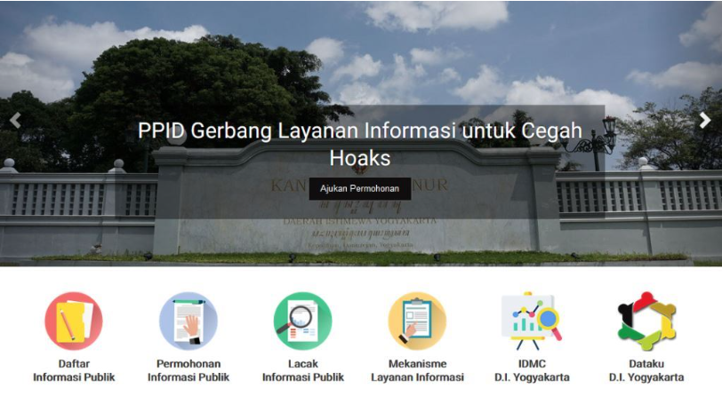

PPID DIY

Dalam rangka memberikan layanan Informasi Publik sebagaimana diamanatkan dalam Undang-Undang Nomor 14 Tahun 2008 tentang Keterbukaan Informasi Publik, Gubernur DIY telah menetapkan Keputusan Gubernur Nomor 79/KEP/2019 tentang Perubahan Ketiga Atas Keputusan Gubernur Daerah Istimewa Yogyakarta Nomor 338/KEP/2010 Tentang Pejabat Pengelola informasi Dan Dokumentasi Daerah. Pejabat Pengelola Informasi dan Dokumentasi (PPID) Daerah Istimewa Yogyakarta berkomitmen melayani masyarakat sepenuh hati melalu visi dan misi berikut ini.
Visi
"Terwujudnya pelayanan informasi yang istimewa, cepat, tepat waktu, berbiaya ringan, dan sederhana sesuai dengan ketentuan peraturan perundang-undangan."
Misi
1. Melakukan pengelolaan dan pelayanan informasi dengan semangat Satriya.
2. Membangun dan mengembangkan sistem penyediaan dan layanan informasi sesuai perkembangan kemajuan TIK.
3. Meningkatkan kompetensi sumber daya manusia.